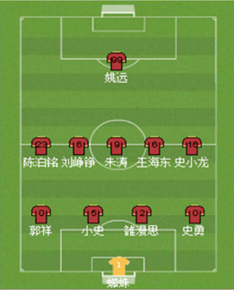

上海上港足球俱乐部主场上海上港足球俱乐部主场
球队信息
地区：上海市
成员：100人
创建人：jackey
成立时间：2006-08-08
主场：虹口足球场
等级：AAA级战队
电信业中 对电信服务提供商来说，TOM是他们在考虑重新设计内部业务流程的需要，是与合作伙伴、结盟以及与其他运营商工作TOM协定时提供的中立参考点；对网络设备和OSS供应商来说，TOM则概述了OSS软件部分可能的分层结构，以及OSS软件所必须支持的功能及其输入输出接口。TOM的目标是为实现端到端的电信流程和数据业务运营流程的自动化提供一个框架。和记黄埔有限公司和长江实业集团有限公司共同投资，李嘉诚控股的企业，2000年3月在香港上市。专注于向年轻时尚的群体提供包括无线互联网业务和网络广告在内的服务。公司业务范围覆盖了包括短信、彩信，WAP，无线音讯互动服务（IVR），内容频道，搜索，分类信息，免费及付费电邮服务，及网络游戏的多个领域。
电信业中 对电信服务提供商来说，TOM是他们在考虑重新设计内部业务流程的需要，是与合作伙伴、结盟以及与其他运营商工作TOM协定时提供的中立参考点；对网络设备和OSS供应商来说，TOM则概述了OSS软件部分可能的分层结构，以及OSS软件所必须支持的功能及其输入输出接口。TOM的目标是为实现端到端的电信流程和数据业务运营流程的自动化提供一个框架。
球队成员
-
头像
姓名
号码
位置
-

司徒剑南
10
前锋
首发球员阵容已选阵型: 451
球队胜率
-
胜
平
负
胜率
-
10
10
10
33.3%